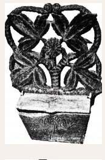
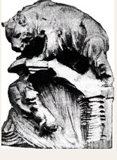
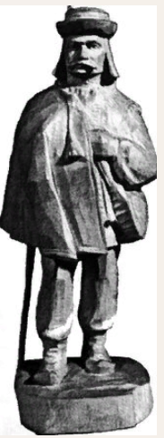
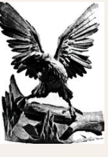
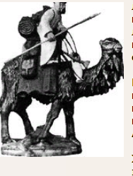
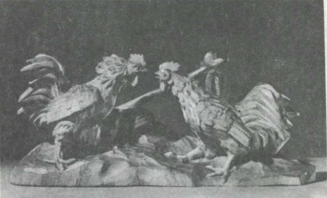
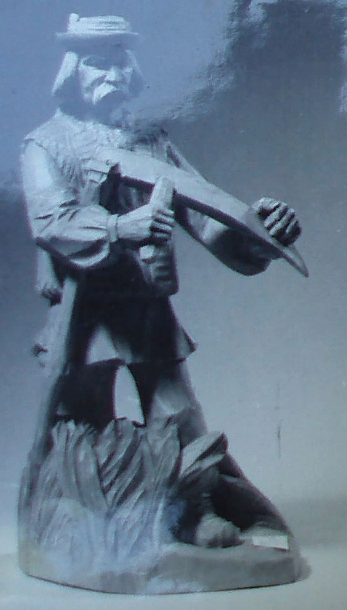
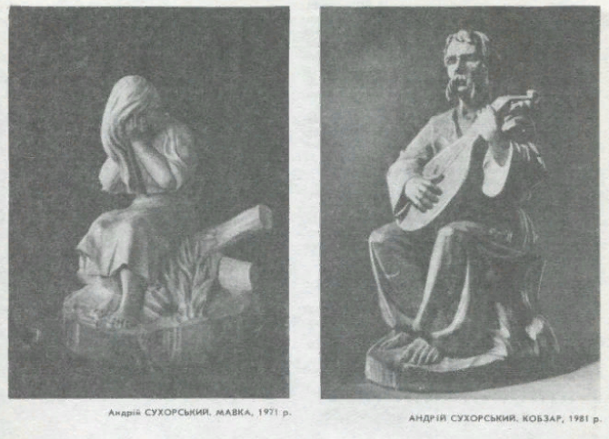
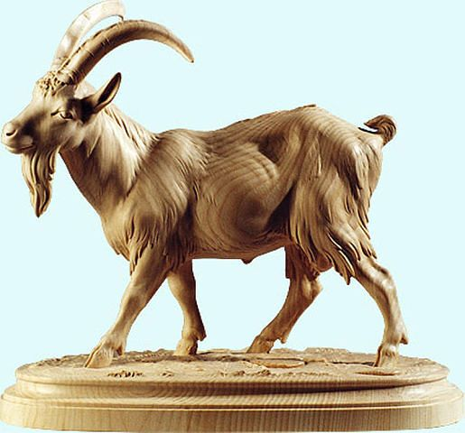

ЛАБОРАТОРНО-ПРАКТИЧНА РОБОТА
Тема: «Скульптурне різьблення «Лемківське різьблення». Скульптурне різьблення, анімалістка, антропоморфізм».
Мета: ознайомлення: з «Лемківським різьбленням»;з анімалістикою таантропоморфі́змом в скульптурному різьбленні.
Матеріали та інструменти: Набір інструментів для об’ємного різьблення. Заточний і креслярський інструмент.
Порядок виконання роботи:
- Ознайомитись зЛемківським різьбленнямйого особливостями.
- Ознайомитись з анімалістикоюта антропоморфі́змом в скульптурному різьбленні
Теоретичні відомості:
Лемківське різьблення
Народна дерев'яна різьба – фігуративна та рельєфна як вид художньої творчості на Лемківщині має давні традиції. Її доля складна, хоча в своїй основі така ж, як і на інших землях з етнічним українським населенням. Умови її становлення і розвитку обумовлювалися історичними, природно-географічними та конфесійними чинниками. Джерельні матеріали початки різьбярства на землях, заселених лемками, відносять до XVII-XVIII століть. Пам'ятки, які збереглися з тих та дещо пізніших часів, свідчать, що іконографією, композиційним ладом вони не відходили від усталених церквою (як західною, так і східною) канонів, здебільшого наслідували твори професійних майстрів, частіше – ремісників. Але в художньо-образних їх системах завжди проступають риси народного світосприйняття, народної естетики.
Думки дослідників, особливо на ранніх етапах вивчення народного мистецтва, були неоднозначними в естетичних, мистецьких оцінках цих речей. Робив своє невблаганний час та особливо соціальні катаклізми. Тому дерев'яної, передусім фігуративної різьби на Лемківщині збереглося мало. Хоча ще у міжвоєнні роки, як зазначає Р.Райнфус, в численних капличках можна було бачити дерев'яні фігурки святих. Поміж них були помітні яскраво поліхромовані, створювані самоуками, але були й такі, як вказує цей знавець Лемківщини, що свідчили про їх творців як вправних майстрів, які працювали на замовлення.
Абсолютна більшість їх безслідно пропала, як і тих, з більш ранніх часів, про які збереглися тільки літературні відомості. А.Будзан у монографії про різьбярство на західноукраїнських землях в розділі про давню лемківську різьбу згадує тільки фігури Христа та Марії, вирізьблені с. Загурським з Риманова і експоновані на виставці 1877 року. При цьому зазначує, що в сакральній тематиці працювали й інші. Називає також скульптора-анімаліста В.Війтовича.
З 1930-х років вивченням скульптури (як виду народного мистецтва) успішно займається Р.Райнфус. Правда, ще в 1906 р.етнографічна секція НТШ у Львові направляла експедицію на Лемківщину. Але народна пластика не була об'єктом належного інтересу часів цієї експедиції. Р.Райнфусу належить ряд ґрунтовних праць з цього виду народної художньої творчості.
Народну культуру Лемківщини популяризував у 1930-х pp. Ю.Тарнович. Спорадично до історії лемківського різьбярства звертається відомий сучасний дослідник Лемківщини І.Красовський. Переважна більшість з них стверджує, що у післявоєнні роки лемківська різьба (як і народна культура в цілому) зазнала великих спустошень. Теперішній стан духовного життя на Лемківщині свідчить про його поступове відродження; створюються умови для вивчення і популяризації лемківського народного мистецтва, зокрема різьбярства. Торкається цього явища і ряд інших сучасних дослідників.
Лемки до різьбярства завжди ставилися шанобливо. Це підтверджується не тільки збереженими пам'ятками, але й архівними записами. Старі лемки згадували, як у селах, де не було різьбярів, столярі дуже часто свої вироби прикрашали фігурними елементами, а то й різьбленням, як це робив, наприклад, Грипенько в с. Тилява (воєв. Кросно). Виявляли любов до таких речей, купляючи різьбу у мандрівних торговців. Так, купив до своєї хати різьблену капличку О.Форванець в цьому ж селі Тилява.
Тенденція до посилення ролі різьбярства зростала в руслі загального економічного розвитку Австро-Угорщини з другої половини XIX століття. Саме це стимулювало пошуки нових форм для його ширшого розвитку. З ініціативи та стараннями графині Ганни Потоцької з роду Дзялинських в містечку Риманів (тоді Сяноцького повіту), поряд з яким знаходився маєток Потоцьких, у 1880-х роках була відкрита різьбярська школа. Одна з причин її появи – це відкриті тут у 1878 р. джерела, вода яких мала лікувальні властивості, а слідом за цим – створення відповідного лікувального закладу. Це передбачало приплив сюди людей певної категорії, які б були потенційними покупцями різьбярської сувенірної продукції. Аналогічні лікувальні, оздоровлюючі заклади, були і в сусідньому с. Івонич і, отже кількість набувачів виробів місцевих різьбярів мала зростати за рахунок тих, хто тут оздоровився.
Названа школа не проіснувала довго – сейм припинив її фінансування, і вона, підготувавши кілька різьбярів, була закрита. Поки що невідома програма цієї школи. Можна припускати, що в її основу були закладені принципи програм промислово-художніх шкіл, що виникали у ті роки в Галичині та на інших землях Австро-Угорщини.
Хоча школа не стала довготривалим центром підготовки різьбярів, проте вона дала імпульс для різьбярства як професії, ремесла на Лемківщині в нових часах, стала спонукою до творення речей декоративного, сувенірного призначення на засадах традиційного народного різьбярства. Враховуючи соціально-економічну ситуацію регіону, вона сприяла розширенню тематики, збагаченню мотивів та виражальних засобів. Поміж сувенірних предметів – різьблених палиць, попільничок, плакеток тощо, з'явилась фігуративна різьба світського характеру: фігурки людей з підкресленими етнографічними атрибутами, фігурки звірів та птахів – представників карпатської фауни.
Створених до часу Першої світової війни таких збереглося надзвичайно мало. Доля витворів рук менш чи більш талановитих лемків, як і самого цього люду, була трагічною. Поза тим, що вони були підвладні руйнівній дії часу, стихій, в абсолютній своїй більшості вони стали жертвою соціально-політичних катаклізмів, особливо тих, що почались на цей час з початком Другої світової війни. Відомо, що у післявоєнні роки тільки незначна їх частка потрапила в музеї Польщі". В Музеї культури Лемківщини в Дзиндранові та в історичному і народного будівництва – у Сяноку їх зберігаються одиниці.
У Сяноцькому історичному музеї зберігається ікона "Пієта" (інв. № 1192), датована XVIII ст. та з означеним місцем походження – с. Ганковці. Якщо ця ікона мальована, без сумніву, народним майстром, можливо, і з названого села, про що свідчить спрощена, майже примітивна художньо-образна інтерпретація іконографії, то барокові повнощокі фігури ангелів, які у верхній частині її різьбленого обрамлення, видають руку вправного майстра. Міг бути в такому селі подібний майстер? Ймовірно. Але все обрамлення ікони швидше промовляє за те, що виконувалося воно в якомусь більш відомому осередку.
У згадуваному Музеї лемківської культури є невелика (50 х 22 х 10 см) скульптура Богоматері XIX століття. Вона, здається, єдина, що уціліла в доволі великій окрузі, з якої зібрані тут експонати. Вона пошкоджена (без рук). Але це не перешкоджає бачити її творця як такого, що вільно володів ремеслом і добре передав цю відому іконографію. Вирізьблена з одного шматка дерева липи і повторює розповсюджений в католицькому світі тип Божої Матері-Королеви. Її фронтальна композиція з дещо розведеними в сторони руками, добре модельоване повнолице обличчя обрамлене звитими локонами, пропорції тіла та одяг з м'якими вертикальними складками свідчать про вправну руку різьбяра. Фігура стояла на рівному постаменті (цоколі), про що свідчить форма її нижньої частини. Розрахована була на сприймання тільки спереду. Очевидно, призначалася в якусь капличку. Відомо, як багато їх було на Лемківщині. І навіть там, де в пошані був камінь, ще в 1965 р. різьблена і поліхромована фігура Богоматері з Дитятком (91 х 64 х 26 см) стояла в присадибній каплиці, збудованій у 1879 році на подвір'ї Василя Новака. У Гладишеві на одному з присадибних дерев'яних хрестів також було дерев'яне Розп'яття висотою 45 см.
У кіотах збережених або документально зафіксованих різьблених обрамлень намісних ікон широко застосовувалися скульптурні мотиви, найчастіше зображень ангелів. Голівки ангелів, що були в обрамленні ікони св. Миколи в церкві села Устрики Дольні, збудованій на поч. XIX ст., а спаленій в середині 1870-х pp., вийшли з рук досвідченого майстра. Гарно модельованими личками, з врахуванням ракурсу їх сприйняття, масштабністю щодо кіоту в цілому, вони емоційно збагачували цей образ.
У церкві с. Балутянка, збудованій у 1820 р. у скупо різьбленому обрамленні образу Богоматері є два фігурних зображення: Святого Духа і ангела. В їх моделюванні відсутні ознаки не тільки намагань творчого, пластично-образного їх відтворення, а й професійної техніки. Це наводить на думку, що в час їх творення в цьому селі, яке згодом стало одним з відомих осередків різьбярства на Лемківщині, різьбярство ще не було розвинуте, але тут ним вже займалися.
Елементи фігуративного оформлення мав кіот з іконою Божої Матері з церкви с. Снітниця, побудованої в 1755 році. Це невеличкі фігурки ангелів у повний зріст. Вони стояли на барокових карнизах, підтримуваних колонами, що фланкували цю ікону. Видовжені фігурки ангелів, які тримали різьблений вінок над Богородицею, тонкими формами не зовсім вписувалися в загальну барокову композицію цього вівтарика. Очевидно, до її виконання приклав руку якийсь не дуже вправний місцевий різьбяр.
Багате різьблення одного з кіотів, що в церкві с. Ганчова, побудованої 1871 року, доповнюють дві дерев'яні постаті святих. Виконані в традиціях класицистичної фігуративної різьби, вони мають огріхи, передусім, в передачі анатомічних пропорцій,– неприродно грубі, висунуті допереду ноги; помітна безпорадність майстра і на фігурі Розп'яття з тієї ж церкви. В пластично-образному трактуванні вона ближча до народного примітиву: голова Ісуса Христа, грудна клітка, ноги скульптурно не опрацьовані. Щоб створити враження правильні природної форми ніг, рук, тобто підкреслити на них окремі м'язи, різьбяр зробив на них поздовжні, однаково інтенсивні заглиблення. Фігура вийшла статична, позбавлена експресії, характерної для цього образу, твореного народними майстрами.
Відкрито підкресленим виявленням цього стану відзначається фігура Ісуса Христа з Розп'яття в церкві XIX століття с. Ізби (Горл, воєв.). В ньому невідомий різьбяр образно переконливо передав стан переходу від життя до смерті. Цей стан – у підкреслено важко звисаючому, ще живому тілі, високо піднесених плечах, з яких безсило опущено голова, у видовжених тонких руках, різко підігнутих колінах. Виразу саме такого стану підпорядковане і розміщення фігури Розп'ятого на середохресті, набагато нижче, ніж це прийнято в цій іконографічній схемі.
Зафіксоване на світлині Розп'яття з неіснуючої вже церкви в с. Розтоки Дальні позначене рисами народного примітиву. Безсумнівно, воно було створене самодіяльним майстром. У цій фігурі всю свою увагу він концентрував на пластиці голови Ісуса Христа. Вона, за усталеною іконографією, схилена на праве рам'я. Але водночас (і це зустрічається доволі рідко) різко повернута, тобто сприймається в профіль. З обох її боків на плечі спадають два тонких пасма волосся. На грудній клітці циліндричної форми, пластично не опрацьованій, гостролукою врізкою підкреслено лінію живота. Плоский набедреник віялом хвилястих ліній від вузла на правому стегні закриває непропорційно короткі стегна. Вони гостро звужені при маленьких колінах. Кволі, немічні і короткі ноги прибиті одним цвяхом. Пальці рук загнуті досередини.
Дерев'яне Розп'яття (висота фігури приблизно 60 см), що було прикріплене біля вхідних дверей церкви с. Ропиця Руська (з 1813 р.) (див. іл. 18 в кн. Р.Кармазина- Каковського "Мистецтво лемківської церкви".– Рим, 1975) мало стилістичні ознаки класицистичного трактування цієї композиції, але тільки поверхово сприйнятого без розуміння її сутності; отже, було виконане малодосвідченим ремісником.
У контексті з превалюючою на Лемківщині круглою скульптурою унікальними є 15 барельєфних, а, точніше, плоскорізьблених фігур, які у післявоєнні роки були перенесені з іншої, розміщені в притворі церкви с. Горянка (воєв. Ліско), побудованої в 1830 році. Кожна з фігур у нижній частині має вузеньку підставку, з якої виступають два прямокутні шипи. Судячи з типажу (Божа Матір, апостоли, пророки), з розташування фігур (всі фігури розвернуті в протилежні сторони), можна припускати, що вони становили відповідні ряди у вівтарі, центральне місце в якому, очевидно, займала сидяча на престолі фігура Богоматері з Дитиною. Про це свідчить не тільки монументальніша образна її характеристика, але й фронтальна композиція. Всі фігури поліхромовані, повторюють іконографію, прийняту східною церквою. Спосіб виконання – неглибоке рельєфне різьблення по силуетному зображенню фігур, явне наслідування іконописних композицій – свідчить про їх творця як майстра середнього професійного рівня, можливо, доброго сільського ремісника.
З-поміж тих небагатьох уцілілих пам'яток дерев'яного різьбярства, що дають змогу говорити про рельєфну скульптуру, заслуговує на увагу і ручний семиконечний дерев'яний хрест з Розп'яттям, датований XVII ст., у збірках Музею народного будівництва в м. Сянок.
Спрощене трактування всіх зображень – фігури Ісуса Христа, прибитого чотирма цвяхами, пристоячих на кінцях середнього рамена, а ще більше – орнаментальне заповнення всієї опрацьованої площі – бігунець, зубчики, ризовані вертикальні і горизонтальні лінії – ріднять цей хрест з такими ж, виконаними безіменними різьбярами Східної Галичини чи Західного Поділля у XVIII-XIX століттях.
Пам'яток різьбярства дерев'яної скульптури на словацькій Лемківщині не багато. Ті, що збереглися, не дають змоги об'єктивно відтворити картину колишнього їх побутування. Наприклад, в "Голгофі", що в церкві с. Гутка (Бардіївський округ), барельєфне Розп'яття, фіґури пристоячих виконаних в тій же техніці, дуже живописні. Модельовані площинно, вони більш кольором, ніж пластикою, творять образи цієї сцени.
Меморіальних пам'яток хрестів з різьбленими Розп'яттями на Словацькій Лемківщині немає. Якщо ж такі й трапляються, то вони тут є нетипові. Пластичну фігуру розп'ятого Ісуса Христа на хресті, переважно дерев'яному, тут замінюють намальовані олійними фарбами на блясі, вирізаній по контуру Розп'яття. Композиційно та колористично вони наближені до барокових, рідше класицистичних трактувань цієї іконографії. Найчастіше хрест має своєрідний дашок із неширокої смуги бляхи, прикрашеної по краю прорізним чи гнутим орнаментом, дугою вигнутий верхніми кінцями. Типовим є такий хрест в етнографічному музеї в Старій Любаві. В такий спосіб виконувались і численні напрестольні Розп'яття (наприклад, у церкві св. Луки з 1826 p., що в селі Криве недалеко від Бардієва).
Частіше в церквах можна бачити патериці з рельєфним, здебільшого ажурним навершям, в якому легко догледітися барокових мотивів, або контррельєфні зображення знарядь тортур, чаш, черепів Адама на передніх сторонах хреста під ногами Розп'ятого (церква с. Довганя Свидницького округу). Здебільшого вони бувають оконтурені орнаментальними лініями, поєднаними з рослинними мотивами.
На Лемківщині ще у міжвоєнний час були доволі розповсюджені такі придорожні каплички та хрести, які в минулих віках на українських землях традиційно називали "фігурами". Це переважно високі дерев'яні хрести, верхня частина яких з двох боків була оббита (обшита) дошками або бляхою. Часто вони поєднувалися. Це – натяк на споруду, водночас – захист розміщених там фігур Ісуса Христа, пристоячих, ангелів. Вони майже завжди невеликі за розмірами, витвори рук безіменних непрофесійних різьбярів. У них вкрай скупими виражальними засобами були передані народні уявлення про вічні істини – життя, смерть, правду, кривду тощо.
На Лемківщині були доволі розповсюдженими ручні хрести з рельєфними Розп'яттями. І не тільки як обов'язкові атрибути церковних треб. Нерідко вони органічно входили в приватну культову практику віруючих. Типологічно вони не різнилися від аналогічних за призначенням церковних. Це, переважно, семиконечні, дво-, рідше – односторонні хрести висотою близько 30 см, вирізуванні самоуками, часто тільки ножем з дерева липи, смереки, ялиці, рідше – інших порід. Плоско-різьблені, дуже узагальнені зображення розп'ятого Ісуса Хреста, пристоячих (якщо вони є) завжди несуть на собі відбиток традиційної іконографії тільки у найбільш загальних композиційній та образній схемах. Найчастіше фігури Розп'ятого відносно площин рамен хреста бувають непропорційно вузькі, видовжені, або ж, навпаки, широкі, короткі. Трапляються нетипові композиції, положення фігур на площині хреста. Наприклад, фігура Христа зображується не як розп'ята на хресті, знесиленого, вмираючого, без життя, а як повна сил, що широко розставленими ногами міцно стоїть на нижньому рамені хреста (див. Subpedium). Пластичне опрацювання фігур, їх частин надзвичайно скупе, хоча й не позбавлене експресивної вимови. Голова Ісуса Христа, наприклад, це, швидше, трапецієподібної форми площина з короткими врізаними заглибленнями, що окреслюють надбрівні дуги, ніс, уста. Об'ємно збіднілими є форми торса, рук, ніг. Фігури пристоячих на бічних раменах – це, за винятком дуже умовно потрактованих голів, різної глибини вертикальних ліній, густо розташованих, об'єднаних певною, здебільшого прямокутною формою.
На сусідніх польських та словацьких землях в XIX – поч. XX ст. були популярні фігурні вулики. їх найчастіше виробляли на подобу ченців, вартових солдат або ж ведмедів, поліхромували. Такий вигляд цих вуликів повинен був, на думку пасічників, виконувати охоронні функції. На Лемківщині в межах Польщі поки що не виявлено подібного вулика. (Вулик в подобі св. Франціска з Музею народного будівництва в Сяноку відносити до них видається некоректним). Але вулик-колода з ризованим майже на всю його висоту (86 см) рисунком ведмедя недавно був знайдений в с. Барвінок і перевезений до музею в Дзиндрановій. Ведмідь зображений стоячим на задніх лапах, а в піднятій правій тримає рамку з сотами, неначе попереджає: вона захищена надійно.
Як широко в бджільничій практиці лемків на словацькій території використовувалися різьблені фігурні вулики, судити важко. Безсумнівно, такі були. Один з таких, що експонується у Свидницькому музеї, привезений зі с. Брезовиня. Це – подоба пана в чорному убранні та такому ж капелюсі, з вусами, по-австрійськи, закрученими доверху. Він рамковий, а це значить, що походить, найвірогідніше, з середини XIX століття.
Про стан, досягнення в різьбярстві, розуміння майстрами свого місця в тодішньому суспільстві міжвоєнного часу уявлення можуть дати речі, літературні матеріали про різьбярів, які після приїзду в Україну ще якийсь час жили і творили в нових умовах, а також пам'ятки, що збереглися в приватних колекціях, музеях, зокрема тих, що на лемківських землях.
У музеї с. Дзиндранова зберігається різьблена сільниця, декор якої типовий для лемківських майстрів. Це рельєфно-ажур-ний вазон, що неначе виростає з самої скриньки на сіль (її спинки), і композиція якого побудована на принципі симетричного розміщення чотирьох великих листків, форми яких, декоративно потрактовані, завжди були в основі різьблених тарелів, скриньок, попільничок тощо.

Мал. 78. Сільниця
У приватній збірці М.Донського у м. Горлиці (Республіка Польща) зберігається фігура "Лемко" (висота 1.20 м), у якій майстерно відтворений образ автохтона східних Бескидів. І не стільки через етнографічно достовірну передачу традиційної лемківської ноші, скільки через вияв його доброти, відкритості, працелюбності. Саме ці кращі риси лемків проступають в усій скромній, але статечній фігурі людини, що на мить зупинилась у дорозі. Вони – в погідному, скрупульозно опрацьованому худорлявому обличчі, затаєній посмішці добрих очей під густими бровами, в зморшках, що передчасно з'явились на щоках. Можливо, це й портретні риси.
Твір цей належить одному з найбільш відомих і талановитих лемківських різьбярів Михайлові Орисику (1885-1946) зі с. Вілька і датований 1930-1931 роками. Приблизно до цього часу відноситься погрудний портрет родичів цього майстра (приватна збірка). Це барельєфне зображення (0.50 х 0.25 м) подружньої пари – усміхненого чоловіка з довгим волоссям, в капелюсі з малими крисами, та такою ж середнього віку повновидою, також усміхненою жінкою в хустці, зав'язаною під підборіддям. Іконографічні риси – худорляве обличчя, продовгуватий ніс, невисоке чоло, усмішка переконливо передана куточками губ, складками біля очей – дуже наближені до тих, що у згадуваній фігурі лемка. Можливо, що в основу її образу майстер поклав портретні риси свого батька.
Відомо, що портрет належить до найскладніших жанрів професійного мистецтва, що в народному мистецтві до нього звертаються не часто. І, як правило, обмежуються зовнішньою подібністю. М.Орисик, поза сумнівом, належав до тих небагатьох, що підносилися до творення портретів, моделей, сповнених багатого внутрішнього світу, життєстверджуючої сили.
Наприкінці 1930-х років він також виконав не позбавлений психологічної характеристики груповий портрет братів Котів.
М.Орисик робив різноманітні декоративні тарелі, люльки, в яких цибухи мали подобу голови тварин, наприклад, барана, палиці з ручками у формі собаки, коня, рисі, орла тощо. Своє розуміння покликання різьбяра, його місця в духовному житті середовища, як і всього багатства художньо-образних, виражальних засобів традиційної лемківської різьби М.Орисик передав своїм учням із сіл Вілька та Балутянка, передусім, синам Іванові, Андрієві, Степанові, Онуфрійові та Василеві. Доля їх склалася по-різному: Онуфрій (1914-1940 pp.) закінчив життя на чужині, не залишивши після себе жодного сліду; Василь (1918 р.) з кінця війни живе в Німеччині, займаючись там різьбою; Степан (1929 р.) живе у Трускавці, відомий невеликими композиціями, навіяними творчістю Т.Шевченка ("Малий Тарас", "Катерина" та ін.). Він вирізує і фігурки карпатських звірів; Андрій (1922 р.) також живе у Трускавці. Він – автор багатьох творів, присвячених Шевченківським ювілеям (напр., "Спізнення на панщину"), фігурок представників різних професій ("Телятниця"), тематичних багатофігурних композицій, а також статуеток різних звірів і традиційних гірських орлів. Чи не найбільш обдарованим був син Іван (1912-1946). Він досконало володів перейнятими від батька прийомами різьби, не відав труднощів у виконанні як круглої, так і рельєфної пластики. Одночасно з батьком передчасно закінчив життя незабаром після переїзду на Тернопільщину.
Заслужену славу доброго майстра і наставника мав і Олекса Стецяк (1915-1959) з Вільки. 1930-ті роки – час найбільш плідної його праці. Не мав собі рівних у творенні декоративних речей з рослинним орнаментом. Дуже пластичні, характерні були і його фігурки карпатських звірів. Наприклад, у невеликій композиції "Ведмедиця з ведмежатком" (1958) переконливо відтворив "забаву" цих звірів. Динаміку ситуації майстер вдало передав неспокійною формою брили, поєднанням врізів різної глибини з горизонтальними та діагональними порізами.
 
Мал. 79. Ведмідь Мал. 80. «Лемко»
Тенденція до тематичної різноманітності помітна у творчості його брата Федора Стецяка (1923 p.). Але свої різьбярські зусилля все-таки концентрував навколо тих, які були йому найближчими. Так, з'явилося кілька композицій, фігурок, пов'язаних з темою різьбярства. В окремих з них передана ситуація майстерні, праця різьбяра за верстатом тощо. Він – автор кількох композицій на Шевченківську тематику, для яких властива традиційна літературно-образна основа.
На батьківщині – у селах Вілька та Балутянка у міжвоєнні роки працювало чимало різьбярів. Різьбив палиці декорованим рослинним орнаментом, подобами звірів Григорій Бенч (1905-1988), учень М.Орисика та О.Стецяка. Він не виходив за рамки композиційних схем та орнаментальних мотивів своїх наставників. У тарелях, плакетках і т.п. віртуозно застосовував різні прийоми їх передачі.
Григорій Бердаль (1887-1960), крім традиційних палиць, тарелів, до кінця життя робив скриньки, покриті різьбою, та пам'яткові лемківські садиби з обов'язковим журавлем біля колодязя.
Упродовж десятиріч ланкою творчих традицій декоративної лемківської різьби був Андрій Іляш (1864-1942). Різьблені ним скриньки, тарелі, таці – неперевершені зразки рельєфної різьби. Круглу скульптуру – фігурки лемків, які виконують різну працю, жіночі статуетки, а також рельєфну різьбу робив Кузьма Стецяк (1886-1946). Фігурки карпатських звірів, орлів, також рельєфно різьблені речі виконував Василь Красівський (1895-1975). Традиційні вироби – фігурні та плоскорізьблені виконували Петро Сухорський (1903-1964); йому, здається, належить першість у творенні орлів з вставними крилами, що позначилося на збільшенні їх розмірів та транспортабельності; Іван Кищак (1902-1969) упродовж життя не відходив від обраної тематики – карпатські звірі та птахи набували під його різцем найбільш типових рис – полохливості і грізності – дикі кабани, гордої величі – беркути тощо. "Бій турів" – один з типових його творів, відтворює сцену, сповнену динаміки, красу і силу цих колишніх господарів Карпатських гір. Іван Орисик (1918-1957) вирізував фігурки різних тварин, орлів. Як більшість, займався плоскою декоративною різьбою. В орнаментальній різьбі постійно працювали Дмитро Шалайда (1905-1947), Юрій Кецяба (1901-1961). Більш широкий творчий діапазон був у Антона Шалайди (1905-1977)– крім плоскорізьблених тарелів, скриньок творив і декорував різні побутові предмети, милувався у прикрашуванні різьбою речей найближчого середовища.
Асортимент творених лемківськими різьбярами речей в своїй більшості мав сувенірний характер. Вони були адресовані відвідувачам Риманова, Івонича, Криниці – курортних місцевостей, популярність яких постійно зростала, що спричинилося до розповсюдження витворів лемківських майстрів в усьому тодішньому світі. Процес цей наростав, та Друга світова війна його перервала.
В історії лемківського різьбярства настав новий період. Більшості з майстрів довелося жити і працювати поза середовищем, у якому сформувалися як різьбярі, а на їх творчості позначилися принципово інші умови існування.
 
Мал. 81.«Орел» Мал. 82. «Погонич»
Доля лемківських різьбярів після Другої світової війни невіддільна від тієї, що спіткала все це "коліно" роду українського. Майже всі вони з родинами переселилися в різні області України. Дехто осів і на роки змирився зі статусом "колгоспника", інші шукали сприятливіших для життя і творчості умов. Наприклад, Бинч Василь Андрійович (1922 р.н.)
пробував прижитися в Одесі, відтак – містечку Горохові на Волині, де, як згадує, "нікому моя різьба не була потрібна...", аж з 1954 р. на постійно поселився у Трускавці.
У 1950-х pp. у це курортне містечко на Підкарпатті переселилося ще кілька різьбярських родин, зокрема, зі с. Гутиська, що на Тернопільщині. На кінець 1950-х років сформувалося три осередки лемківських різьбярів в Україні: у Трускавці та Моршині (також відомому курортному містечку на Підкарпатті), і в с. Гутиськах на Тернопільщині. Значну групу склали майстри з родинами, що осіли у Львові або біля нього. І тільки Шагайда Василь (1930-1964) постійно жив і різьбив в Одесі, а Іляш Михайло (1937 р. н.) і дотепер у Ялті.

Мал. 83. «Півні»Найбільш численною є трускавецька група лемківських різьбярів. Тут, у цьому всесвітньовідомому мальовничому курортному містечку біля підніжжя Карпат, що старим лемкам дуже нагадує їхні родинні місця, осіли і деякий час працювали майстри старшого покоління: Григорій Бенч (1905- 1988), Маркіян Одрехівський (1920-1979), які принесли з собою традиційне розуміння різьби. Наприклад, Г.Бенч тут вирізував такі ж палиці з фігурними головами псів, інших звірів, які робив і на батьківщині.
Звичною плоскою різьбою та вирізуванням орлів займався М.Одрехівський. І.Красівський відзначався високою культурою плоскої різьби.
Неперевершеним майстром дуже живописно трактованих сюжетів в об'ємах був Бердаль Іван Григорович (1928-1987). Його твори "Лемківська садиба", "Бойківське подвір'я", "Лісоруби" (1969-і pp.) правдиво, майже етнографічно достовірно відтворюють певні об'єкти, ситуації тощо. Автор не залишав у них не опрацьованим жодного клаптика поверхні. Він різьбив і фігурки оленів, орлів та ін.
Великий доробок, що характеризується тематичним багатством, високим вико навським рівнем, має Василь Бинч (1922 р.). Творчої праці він не залишає. Його одно- та багатофігурні композиції навіяні то народною ліричною, історичною піснею ("Мати доню колисала", "Козаки в турецькій неволі"), то спогадами дитинства ("На верховині"), то шевченківськими творами, до яких, як і його колеги, ставиться з непідробним захопленням. Як і інші майстри, робить фігури оленів, орлів.
У цьому осередку працюють Федір Синютка з сином Ярославом (1947), який не має собі рівних у різьбленні надзвичайно динамічних фігур коней, хоч робить і фігурки інших тварин; Петро Потоцький (1923) різьбить рельєфні декоративні тарелі та фігурки орлів. Андрій Красівський (1934), син Василя Красівського, виконує різні фігурки, в тому числі – тематичні. "Орли" вирізують Михайло Іляш (1927), його син Василь, Роман Орисик (1927), Ганна Орисик (1934) – дружина Романа, Юрій Бердаль (1957) різьбить також декоративні тарілки.

Мал. 84. Косар
У Трускавці в пізніші (1970-1980-і) роки осіли, переселившись сюди з Гутиська та Моршина, різьбярі, зокрема, діти та зяті Івана Долинського (1936) – Данило та Микола – майстри фіґурної пластики; зять Степан Гірняк (1952) з жінкою, дочкою І.Долинського – Ярославою різьблять деко-ративні тарілки. Зять Іван Петрович Сухорський (1941 р.) продовжує традиції батька Петра Сухорського – різьбить тільки "орли".
З успіхом працюють тут такі майстри як Сухорський Іван Іванович (1947), який навчався різьбярства в Янівському училищі, але орієнтується на традиційну лемківську різьбу, та Костянтин Петрівський (1931), який робить орлів.

Мал. 85.«Мавка» Мал. 86 «Кобзар»
У Сільці, що поряд з Трускавцем, живуть і різьблять переважно орлів Михайло Михайлишин, Василь Одрехівський та його син Петро.
Велика кількість лемків-різьбярів оселилася в м. Моршині – підкарпатському відомому курорті. Всі вони працюють в руслі традиційних форм і прийомів лемківської різьби. Наприклад, орли тут різьблять брати Василь (1925), Іван (1926) та Петро (1935) Іляші. Спорадично вони вирізують й інші фігури, переважно, карпатських звірів. Орли різьблять Іван Бенч (1924), Микола Бердаль (1931), хоча він відомий як автор анімалістичної пластики, Петро Кіт (1917), асортимент виробів якого включає, крім традиційних звірів і птахів також фігури коня, останнім часом – і верблюда. Іван Долинський (1936) та Михайло Похонський (1942) майже виключно спеціалізуються на орлах.
Значна група різьбярів постійно живе і працює на Тернопільщині, передусім, у с. Гутиська Бережанського району. Тут деякий час жили і творили Іван Кищак (1902-1969), який згодом переїхав до Львова, майстер круглої скульптури, плоскої рельєфної різьби; згадувані Григорій Бердаль, Дмитро та Антон Шалайди, Іван Красівський, Маркіян Одрехівський. Різьбою, як заповітним ремеслом, займаються ту Сидор Одрехівський, Михайло Іляш, Іван Михайлишин, Степан Потоцький, Михайло та Олег Бердалі. Коло їх творчих зацікавлень здебільшого замикається тематикою, мотивами, навіяними спогадами, а ще більше – любов'ю до рідної Лемківщини. Це – різьблені композиції-картини сценок лісового життя, наприклад, "Родина оленів" (1983) І.Бердаля чи "Лемківська хата" (1990) Ю.Бердаля та інші. Значне місце в їх творчості займає виготовлення декоративних тарілок та палиць. Не чужа їм і інша тематика, наприклад, різьблення фігури сильного хижого лева (Д.Долинський, 1990). На Тернопільщині жили і працювали Петро Сухорський, Юрій Кецяба.
У різний час осіли у Львові, працювали і працюють кілька різьбярів-лемків. Це Степан Стецяк (1928), який, здобувши вищу гуманітарну освіту і працюючи за фахом, не забув батьківської школи і розвиває далі традиційну лемківську різьбу. Він – автор багатьох одно- та багатофігурних композицій, окремі з яких експонувалися на виставках різного рівня. Йому однаково підвладні техніки об'ємної та плоскої різьби, він творить нові декоративні форми. Зеновій Іляш (1948)– автор багатьох тематичних фігурок, Богдан Одрехівський (1947), в основному виконує декоративні тарілки. Тут жили і творили Василь Кищак (1930-1964), Герасим Боляк (1913-1972), Іван Кищак (1902-1969), а біля Львова – Онуфрій Сухорський (1917-1969).
Не всі лемківські різьбярі тут згадані, не всі вони ще відомі. Доля закинула багатьох з них далеко від рідних сторін, України, але всюди і постійно свідчать вони про себе як про вірних синів своєї Вітчизни.
Говорити про традиційне різьбярство на лемківській землі (етнографічному регіоні) у післявоєнний час дуже важко. І не тільки тому, що звідси вибули майстри, а й тому, що надто мало збереглося пам'яток, як і обмаль відповідного літературного матеріалу. Проте окремі факти свідчать про живучість традицій різьблення в цьому краї.
У 1960-ті роки в с. Наконечному займався різьбярством Лукаш Суховацький. Збереглося кілька створених ним речей. Це – футляр та дві підставки для Євангелія в церкві сіл Наконечне та Ждиня. Обидві підставки майже ідентичні за конструкцією та пластично-образним ладом. Це своєрідні пюпітри з рамковими горизонтальними підставками. На верхню, що встановлюється під потрібним кутом, кладеться Святе Письмо. Вона має ажурне різьблене заповнення – п'ять соковитих, на зразок тих, що відомі на давніх плакетках, підносах виноградних листків, центральний з яких перекритий акуратно вирізаною монограмою "Іс. Хр.".
У с. Ганьчова (воєв. Н.Сянч) живе лемко за походженням (і який таким себе вважає) Макляк Роман (1961 р. н.). Син вчителів, які переїхали сюди з-під Сянока, з шкільних років захоплювався різьбярством. Робив спроби поступити до Варшавської художньої академії. Незважаючи на зайнятість приватним торговельним інтересом, не залишає різьбярства й тепер. Обладнав майстерню, різьбить стільці у вигляді фігур ведмедя, свічники, декоративні тарелі. У рельєфах цих останніх проступає тема рідних Карпат. Окремі з них присвячує вже традиційній щорічній "Ватрі" – в с. Дзиндранова. Поки що в творчій манері орієнтується на Пецоха, але, як сам каже, шукає власного виразу. Його зростаючий інтерес до лемківської культури може з часом сконцентруватися на традиційній лемківській різьбі.
В останні, 1990-ті роки, абсолютна більшість лемківських різьбярів свої творчі зусилля зосереджує на виробленні традиційних орлів. У 1970-1980-ті роки саме за цей сюжет вони піддавалися критиці мистецтвознавців. При тому, що творена ними композиційно-образна ситуація була багатоваріантна, хоча позірно це виглядало навпаки – вона видавалася дуже обмеженою ("Орел на гнізді", "Орел з орлятами", "Орел на скелі", "Орел зі здобиччю в пазурах", тощо), як і розмірами цих фігур, композицій, а частково і манерою виконання. Окремі майстри, наприклад, І.Долинський, В.Шпак, створюють орлів неповторних за образним, пластичним багатством. Вони надають цьому птахові не тільки виразу гордої величі, але й вміло та в міру підпорядковують йому декоративність: нетрадиційно (прямі) розгорнуті крила, об'ємно-кучеряве пір'я в окремих місцях фігури в поєднанні з воскованою поверхнею створюють додаткові світлотіньові ефекти. Але не тільки вироби цих майстрів, а й всіх інших, незважаючи на гоніння теоретиків, залишаються на недосяжній висоті. Тисячами "розлітаються" вони по світу, і не тільки заселеному українською діаспорою, а, наприклад, в арабські країни. Різьбярі з'ясували для себе, що там у пошані не стільки орел, ця цар-птиця, скільки вироби з дерева взагалі. Зараз окремі трускавецькі майстри інтенсивно працюють, вирізаючи з дерева липи фігури, практично їм не знаної, але шанованої в арабському світі такої тварини, як верблюд. І, щоб догодити покупцям, фарбують їх.
Лемківське різьблення як явище оригінальне, ціноване кращими рисами народного пластичного мистецтва, була і є відкритою для багатьох, хто хоче нею займатися. Дорога до неї відкрита всім, не тільки лемкам.
У Трускавці десятки років живе і плідно трудиться в колективі лемківських різьбярів Василь Шпак (1929 p.). Його розуміння місця різьбяра в суспільстві – тотожне тому, яким воно є у більшості лемківської різьбярської громади. Зрозуміло, що й тематика його творів не випадає із загального контексту. Останнім часом він, як і всі, вирізує орлів.
В останні два-три роки їх різьблять і ті (з Трускавця, Моршина), хто ніякого відношення до лемківської різьби не має,– вони залишаються невідомими. На місцевому та закордонному ринках з успіхом збувають копійовані зразки творів лемківських майстрів. Самі ж лемківські різьбярі з сумом стверджують, що не мають кому передати естафету якщо не вікового, то бодай свого ремесла. їх діти не пішли шляхом батьків, набувши інших професій,– інженерів, медиків тощо. Правда, деякі з них, незважаючи на професійну зайнятість, обережно переймають досвід батьків.
Анімалістик, антропоморфізм
Анімалісти́чний жанр, анімалі́стика (лат. animalis – «тварина») – різновид образотворчого мистецтва, зображення тварин у живописі, скульптурі, графіці.
Антропоморфі́зм (грец. ανθρωπος – людина, грец. μορφή – вигляд, форма)уподібнення будь-чого до людини або перенесення її фізичних та інтелектуальних властивостей на тварин, рослини, речі та явища навколишнього світу.
До слова сказати, не кожен різьбяр що вирізує тварин, дійсно анімаліст. Для художника - анімаліста завданням є передача реального образу тої чи іншої тварини: його грації, сили, пластики, фізичного стану, емоцій і т.і. (мал.87).

Мал. 87. Анімалістика «Собака»
Анімаліст ніби намагається прочинити вікно в природу, донести до людей її красу через образ тварини, показати неповторність і, ймовірно, частково незбагненність того, що оточує нас. Різьбяр стає
Мал. 88. Анімалістика «Цап»
анімалістом, пізнаючи свій об'єкт, навчаючись розуміти його (мал.87).Зрозуміло, потрібно грамотно розпорядитися своїм часом і можливостями, а це непросто. Не варто відразу братись за великі тварини, за складну рельєфну скульптурну роботу. У композиції виробів дуже часто використовують зображення різних комах, птахів і тварин. При підборі потрібного зразка для виробу використовуються в основному фотографії. Власне малюнки необхідні тільки для вироблення ідеї твору, подальше ж опрацювання всіх елементів виконується за фотографіями.
Хороших знімків , які можуть служити в якості керівництва для різьбяра, надзвичайно мало. Практичність - це головне, чим потрібно керуватися при відборі об'єкта для різьблення. Ракурси краще вибирати профільні, збоку і, бажано, щоб деталі детальніше і точніше проглядалися. Фактично ж на практиці доводиться буквально «полювати» за вдалими знімками , «перелопачувати» у пошуках купи навіть далеких, здавалося б, від мистецтва видань. Втім, якщо фотографія не підходить безпосередньо для композиції, все одно її можна використовувати в допоміжних цілях як джерело інформації про характер, дрібних частин тіла і форми тварини.
Мал. 89.Антропоморфі́зм
Якщо у вас вже склалася ідея композиції, підібрані рослинні елементи, то ви все це акуратно промалюйте, потім зніміть кальку з малюнка і переведіть зображення на дерево. Потім дуже ретельно попередньо проліпіть все в деталях з пластиліну. Не ріжте відразу в дереві, тому що працювати буде важче, довше і вийде гірше: якщо відразу виконувати композицію в деревині, можна навіть і не вкластисяв матеріал. Ліпіть, ліпіть і ще раз ліпіть! А вже потім за багаторазово виправленої і продуманої ліпної моделі вирізайте, так робота вийде краще, виконається швидше і принесе задоволення.
Добру, грамотну анімалістичну композицію неможливо зробити без знання способу життя тварини, його повадок, загалом, самих різних особливостей, властивих йому. При роботі із зображеннями тварин треба завжди пам'ятати: чим більше природності зберігається, тим краще і привабливіше виходить композиція. Краще, коли тварина знаходиться в якійсь стадії руху, щоб розуміти, до чого прагнути, в чому сенс різьби, як більш точно і вірно зобразити напругу м'язів, динаміку руху, загальний вираз. Все має нести емоційне навантаження, а у виконанні, бути красивим, привабливим, цікавим (мал. 88). При поганій підготовці до процесу різьблення помилки можливі і неминучі.
Художник-різьбяр - це художник, який використовує для втілення своїх художніх задумів і творчих ідей такий матеріал, як дерево. Все інше залежить від того, як художник бачить і як втілює свої емоції, як розуміє пластику, обсяг, простір, пропорції, як виділяє певні сюжетні, смислові нюанси при створенні композиції.
Контрольні питання:
- Охарактеризуйте особливості Лемківського різьблення.
- Дайте поняття анімалістиці, таантропоморфі́зму в скульптурному різьбленні.